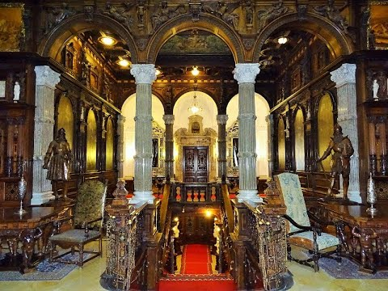
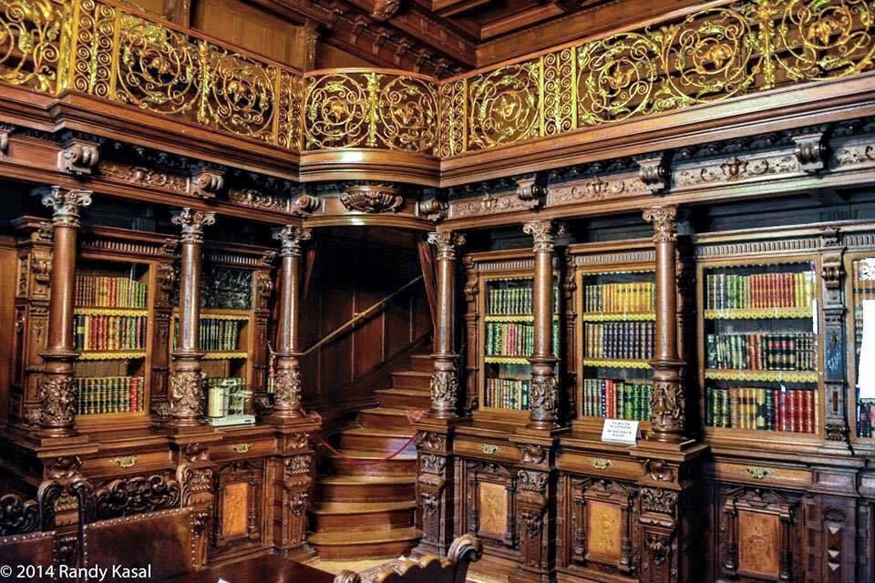
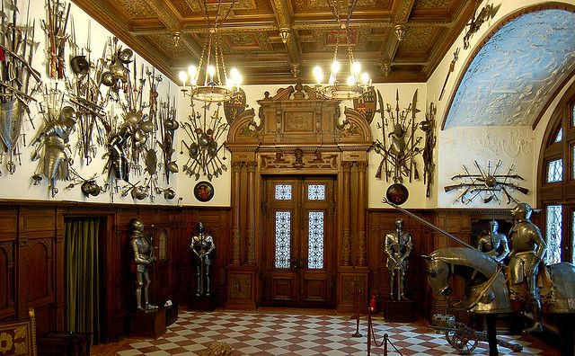
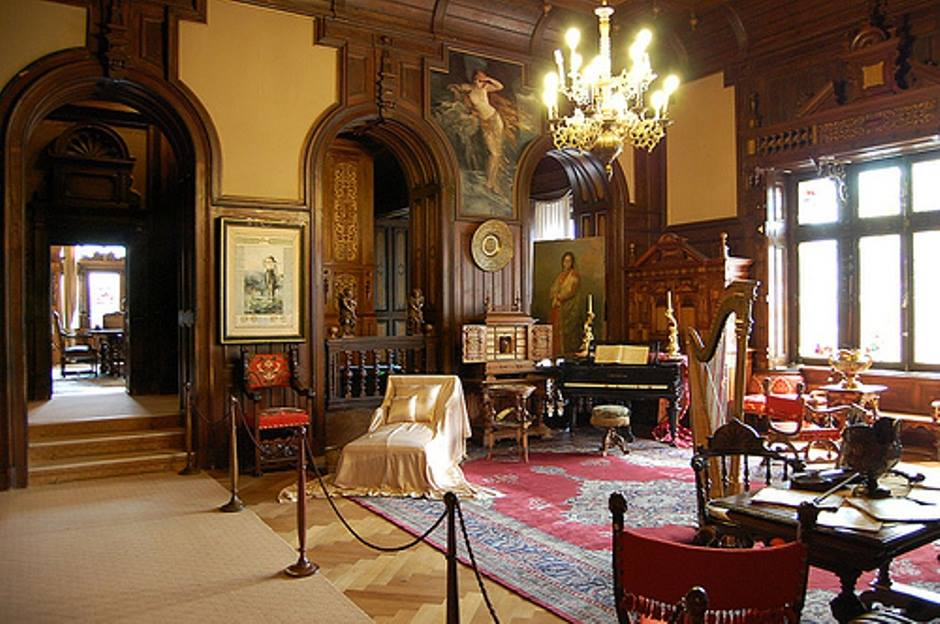
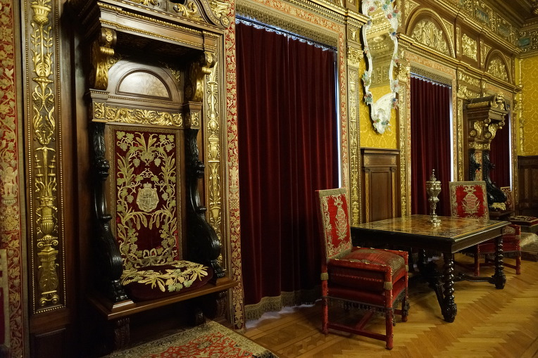
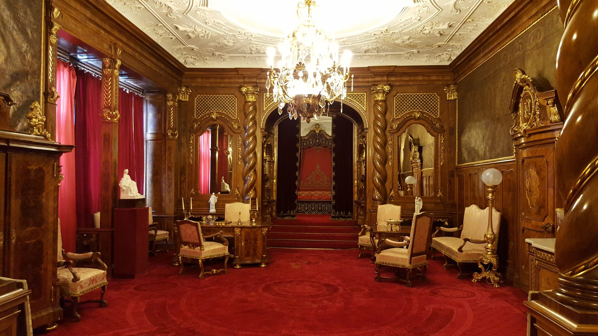

Holul de Onoare este grandios, cu lambriuri din lemn de nuc, tapetate cu basoreliefuri și statuete. Plafonul mobil din sticlă, acționat cu ajutorul unui motor electric sau printr-un sistem manual, era un element de surpriză pentru vizitatorii regelui, care puteau să admire seninul cerului în nopțile de vară. A fost finalizat complet abia în 1911, sub îndrumarea lui Karel Liman.
PREZENTARE
În Castelul Peleș, cele mai importante săli care pot fi vizitate sunt:


Biblioteca regală îi atrage în special pe cei pasionați de cărți rare, având coperți din piele și gravate cu litere de aur. Chiar și pentru cei mai putin familiarizați cu universul cărților, există un punct de atracție: ușa secretă, o cale de acces în spatele unui raft cu cărți, prin care regele se putea refugia în diverse încăperi ale Castelului.

Sălile de arme, amenajate în perioada anilor 1903 - 1906, adăpostesc peste 4.000 de piese europene și orientale din secolele XIV - XVII. Cele mai prețioase sunt considerate armurile germane din secolele XVI - XVII și o armură completă pentru cal și cavaler, unică în România.

Sala de muzică a devenit salon de serate muzicale la dorința reginei Elisabeta. Mobilierul de aici a fost primit în dar de la maharajahul de Kapurthala.

Sala Florentină , denumită și Marele Salon, impresionează prin plafonul sculptat în lemn de tei, aurit, cele două mari candelabre și decorațiunile în stilul neorenașterii italiene.

Sala de concerte, amenajată în 1906, se află la etajul I. Instrumentele muzicale prezente aici sunt un clavecin executat la Anvers în 1621, un pian cu coadă verticală Blüthner și o orgă Rieger cu două claviaturi.

Apartamentul imperial a fost amenajat tot în 1906 cu ocazia vizitei (care n-a mai avut loc) a împăratului Austro-Ungariei, Franz Josef I, invitat la aniversarea a 40 de ani de domnie ai regelui Carol I.
Alte săli:
Sala de Consilii , care seamănă cu una dintre sălile Primăriei din Lucerna, Elveția.
Cabinetul de lucru unde se află un birou impunător și un pupitru pentru audiențe.
Sufrageria, unde sunt expuse piese de argint de o mare valoare, este situată la etajul 1 și are un mobilier rustic breton din secolul al XVIII-lea.
Salonul Turcesc care adăpostește o colecție de vase turcești și persane în alamă.
Dormitorul regal care este luminat de un candelabru din cristal de Boemia.
Vitraliile Castelului Peleș au fost cumpărate și montate între 1883 și 1914, cele mai multe fiind aduse din Elveția și Germania, piese datând din secolele XV și XVII.
De jur împrejurul său, Castelul are șapte terase decorate cu statui din piatră, fântâni și vase ornamentale din marmură de Carrara.
După Castelul Bran, Peleșul este considerat al doilea muzeu din țară căutat de turiști. Numai în anul 2006 i-au trecut pragul peste 250.000 de vizitatori din țară dar și din SUA, Australia, Japonia și Noua Zeelandă. În primele șase luni din 2010, 80.000 de turiști au vizitat castelul Peleș.
Importanța Castelului este dată și de măsurile de securitate existente: pază militară, supraveghetori și camere video.
De curând când a fost deschis publicului un tur extins care cuprinde atât etajul I, cât și mansardele I și II. Așa încât rămâne un singur etaj (de altfel și ultimul) nedeschis publicului, etaj care servește drept loc pentru depozitarea diferitelor obiecte, tablouri etc. Ghidajul este disponibil în cinci limbi străine.[necesită citare] În luna noiembrie a fiecărui an, Castelul Peleș este închis pentru curățenie generală.